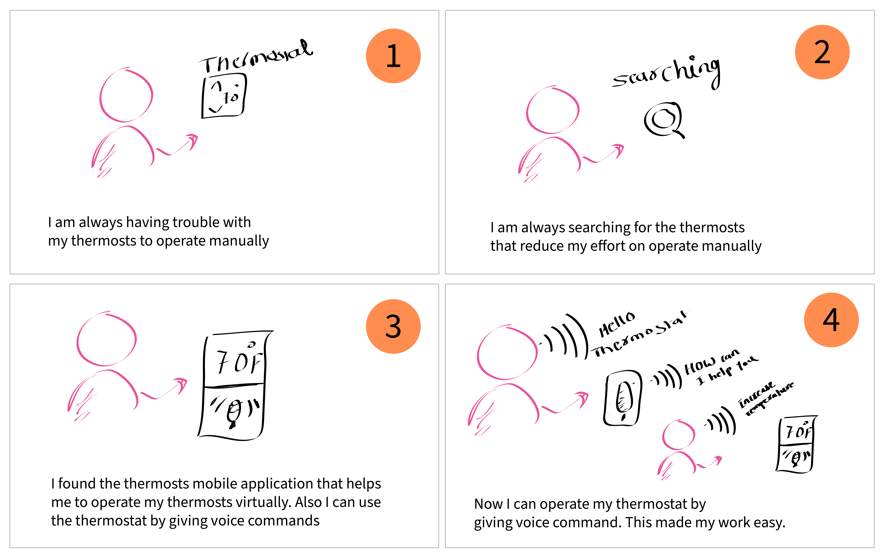
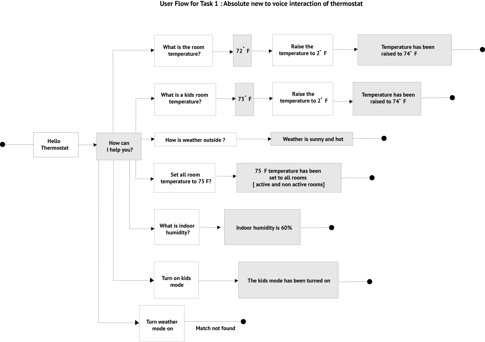
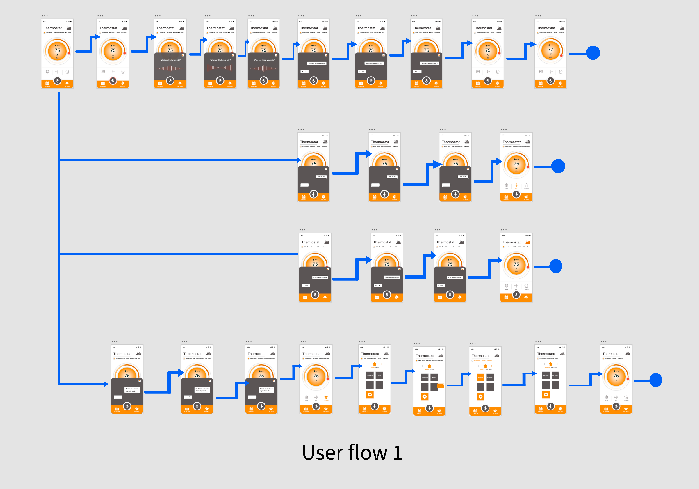
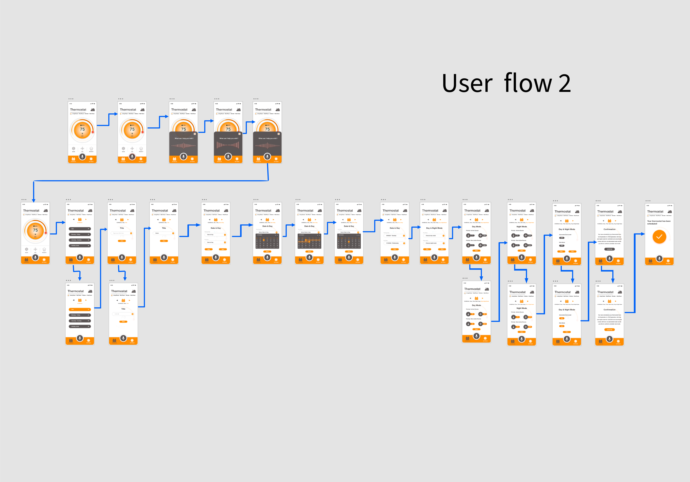

Process
Understand problem context area:
STORYBOARDING: I have come up with user storyboarding for the thermostat to express the ideas of how the user having trouble operating manually with their thermostat and if the user have a mobile application with the VUI features that reduce their effort of operating it.
User Research & Research Key Insights
I have started to understand problem context areas by conducting user interviews with the 3 different participants of familiar with voice thermostat, absolute new to the voice commands and finding key insights as well as comeup with business perspective research key insights.
User Perspective
1. Users work hard to operate the existing thermostat Manually.
2. Users would like more features for their home operations.
3. Thermostat have interactive mobile Interface with the Voice Commands since they can use the thermostats easily.
Business Perspective
1. Create an app that has rich voice commands.
2. Increase the number of new users to use voice controlled app.
3. Functionality of the app needs to be more effective and intuitive while using.
Design and develop ideas
CREATE MULTIPLE USER FLOWS FOR THE APPLICATION: Gathering ideas from the User research key insights, I drafted the user flow(Dialog flow) that the user would attempt to achieve their goals. For the voice user interface applications the app needs to work on two different interactions together. Since we created a dialog flow which helps us to design and integrate a conversational user interface into mobile apps. We created three various dialog flows for three different kinds of target users.
User flows help us on mapping out each and every step the user takes—from entry point right through to the final interaction in our voice User Interface of thermostat application.
Task 1. Created basic functions for Absolute new user for the Voice controlled devices.
USER DIALOGUE FLOW:
USER TASK FLOW:
Task 2. Created scheduling mode for user date and day functions for user the Voice controlled devices.
USER DIALOGUE FLOW:

USER TASK FLOW:
Design system:
To develope and design dialog flows and the user flows i have designed low and high fidelity mockups and To finalize high fidelity mockups I have come up with 16 various panel designs for the application and finally we finalize one of them. As well as come up with the UI Assets for the application.
User testing & Key insights
I have conducted In person Usability studies with 3 participants to identify the user problems while user interacting with our thermostat and we found out important key insights.
USER TESTING KEY INSIGHTS FROM FIRST ITERATION OF THE APPLICATION:
User felt priority option information but when the user wanted to change the priority room from activate to non activate user did not find it. Since then, I have edited my prototype with priority settings which makes it easy to understand the activated and unactivated room.
Users got confused or bored when scheduling a new mode. When the user comes to scheduling for the date, day and night mode the user feels it’s taking too much time and a couple of things are repeating as well since the user thinks if there is a default option then the user can schedule quickly.
Some voice commands take much time to produce results. Animation of the app should be a little fast so that users can navigate the app quickly.
Solution: (Final prototype recordings for thermostat)
I have designed high fidelity clickable prototypes using the Adobe Xd tool that supports voice user interface designs. This tool made my work easy to establish the concept of VUI.
Conclusion
Outcomes
1. Designed and developed a clickable high fidelity prototype to establish the concept of Voice User interface mobile application for the Thermostat.
2. Created basic thermostat operation flows for the user to operate the thermostat by giving voice commands.
3. Created scheduling mode and holiday mode user flows for the thermostat so the user can schedule their thermostat as per their desired day and time and temperature.
This is fun, curious as well as an exciting project of Bellevue College Interaction design course. Curiosity to words learning on how the Voice User Interaction application works perfectly and reduces human effort in everyday life. This curiosity made me want to work on this project. While working on this project I have read articles and watched videos related to Voice User Interface Applications. In every article and videos I have seen, everyone is mentioned in their articles and videos on various softwares to design dialog flows as well as using prototyping tools to create High fidelity mockups. Since I have started to explore and spent lots of time on which tools help me to design the entire Voice User Interface application.
Totally I got confused and later on I realized that Voice User Interface applications are working on two different interactions (Voice Interactions & User Interactions) together.Then Finally I understood the key insight on how to design and develop voice interface applications.Before designing and developing any VUI Applications, we have to understand what is the major purpose of the application why we are designing and developing it then major key insight is using the pen and paper first understand the flow of multiple interactions and identify problems on flow and simplify them and finalize the multiple flows of the VUI Applications.This made my work easy. Once we clear on our flows then whatever tool that we feel is easy we can use to design and develop the VUI Applications.